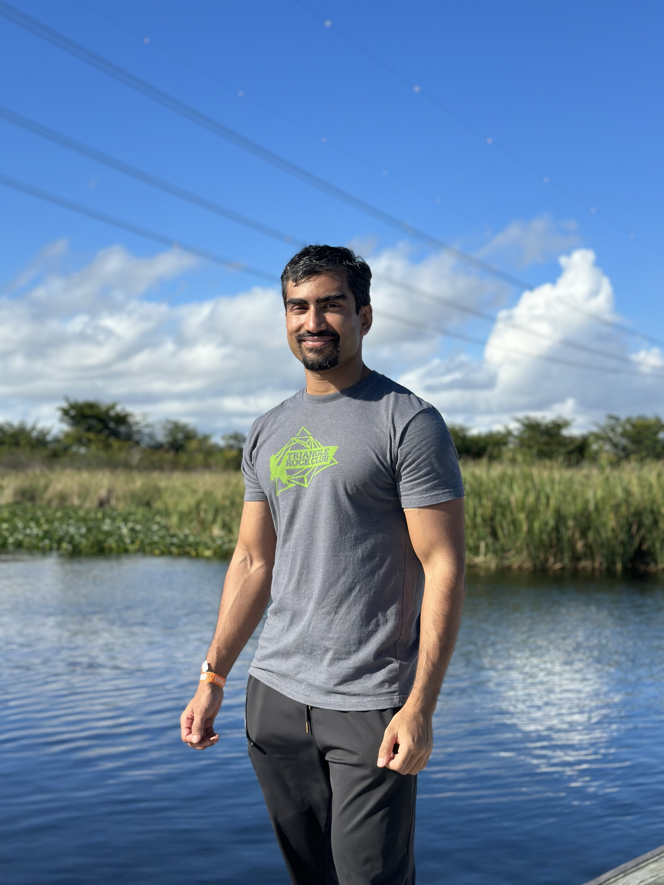

October, 2020
Current Graduate Student of University of North Florida in Statistics. Courses I have done so far are: Mathematical Statistics, Statistical Methods, Mathematical Biology<, Computer Intensive Methods.
I also have a Bsc in Electrical and Electronic Engineering from Khulna University of Engineering and Technology. I am very passionate about Machine Learning and Big Data and my interests includes Artifical Neural Network, Traditional Machine Learning Models and also applying statistical analysis to problems in signal processing, computer vision etc. I have many personal projects in different computer programming
languages such as Python, C++, JavaScript and also projects from my Master's which i will be including in this portfolio.


The purpose of this project is to develop a model to predict the weight of an alligator from its length. The datasets are taken from aerial photographs or from visual sightings from air or boat.
Analysis of the dataset has been conducted and from that a simple regression model has been developed and its validity was determined. After that, a transformed model was compared with the simple linear model and the best model has been chosen

Although the sequence of pseudo-random numbers is not truly uniform, a good generator will produce numbers that gives essentially the same results as true random numbers. Generation of random numbers has numerous applications in many scientific problems. The problem asks to generate random numbers from a uniform random generator and use Kolmogorov-Smirnov test to find if the samples come from a uniform distribution
The objective is to estimate \pi that best describes this gaussian model and also evaluate the algorithm.

The bootstrap method is a resampling technique used to estimate statistics on a population by sampling a dataset with replacement. In this project, we are given a dataset of haircut costs from a small classroom. We are going to use bootstrap method to find 90% confidence interval for the average number of dollars that a student at this college spends on a haircut. We are also going to use 2 of the bootstrapping techniques: percentile and double bootstrapping to build this confidence interval and compare the results obtained by these 2 methods..
The objective in survival analysis is to establish a connection between covariatesand the time of an event. In this project we are going to perform dierentsurvival analysis techniques on publicly accessible dataset. For the 1st part we are mainly interested in using Kaplan- Meier plots to visualize survivalcurves and performing Cox proportional hazards regression to describe the effects of each variable.
A web application built in python to represent different motor vehicle collision data stats in New York.